TECHVESTVENTURES RISK ALERTS — Daily Mode — Emergent News Digest — November 6, 2026, 9:00 AM EST see all graphs click TVV Risk Center
TVV RESEARCH DIGEST — November 6, 2026 — 12 desks
1. Major Geopolitical Conflict Developments
- ★ Trump and Qatar's emir spoke Nov 6 on de-escalation as Doha keeps mediating between Washington and Tehran; no ceasefire or Hormuz reopening has been announced. Iran still keeps most Hormuz traffic restricted, while Al Jazeera reports exemptions for Qatari, Indian, Chinese and Iraqi vessels (Iranian policy claim; enforcement contested). Polymarket prices a US–Iran effective ceasefire through Nov 15 at about 58% and through Dec 31 at about 28% (see graph). AP · Al Jazeera · Polymarket
- ★ Overnight Russia–Ukraine strikes: Ukraine's Air Force reports 227 Russian drones (86 jet-powered) with 196 intercepted or suppressed and hits at 14 locations, mainly Dnipropetrovsk, Vinnytsia and Kyiv oblasts. Zelenskyy says Russia has now damaged "every power plant" in Ukraine. In Brussels, technical talks on reconstruction and postwar security guarantees continue; AP cites US envoys describing renewed security talks as productive. Polymarket prices the UAE as the overwhelming next peace-talks venue (about 96%; see graph). NV Ukraine · The Guardian · AP · Polymarket
- ★ Hormuz still closed to most traffic: Al Jazeera's Nov 6 live coverage notes Trump warned the US "may have to destroy the rest" of Iran's capabilities even as mediation continues — conflicting signals versus the Qatar channel. Treat wartime shipping and strike claims as unverified unless independently confirmed. Al Jazeera live · AP
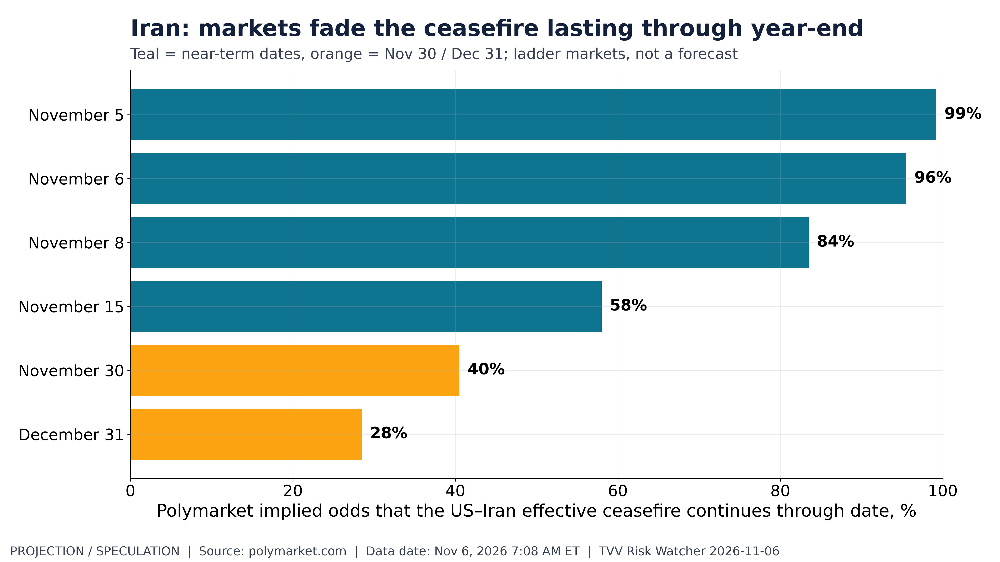
Iran: markets fade the ceasefire lasting through year-end. Polymarket: US–Iran effective ceasefire through Nov 15 58%; through Dec 31 28%. Polymarket, Nov 6, 2026 7:08 AM ET. [Projection/Speculation; data as of Nov 6, 2026 7:08 AM ET] Source: polymarket.com data page
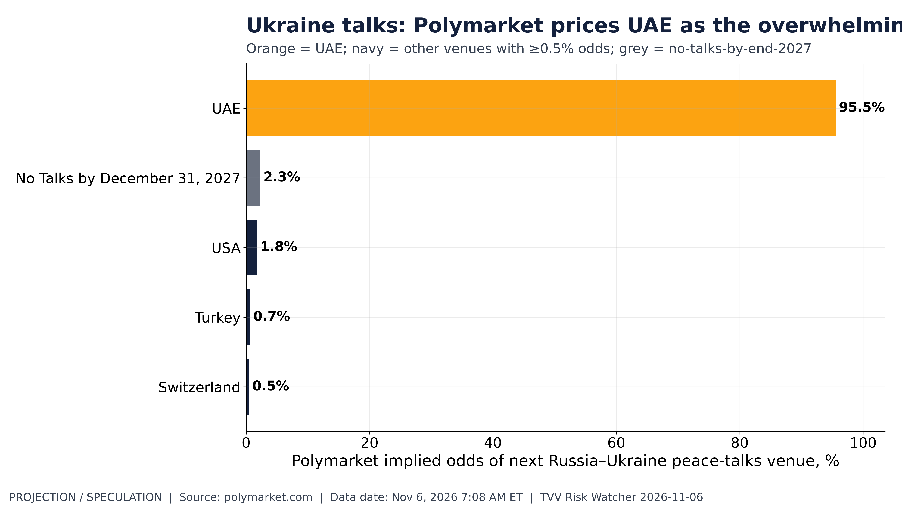
Ukraine talks: Polymarket prices UAE as the overwhelming venue favorite. Polymarket: next Russia–Ukraine peace talks venue — UAE 96%; others in low single digits. Polymarket, Nov 6, 2026 7:08 AM ET. [Projection/Speculation; data as of Nov 6, 2026 7:08 AM ET] Source: polymarket.com data page
Geopolitical Impact of US Fed Rate Hikes:
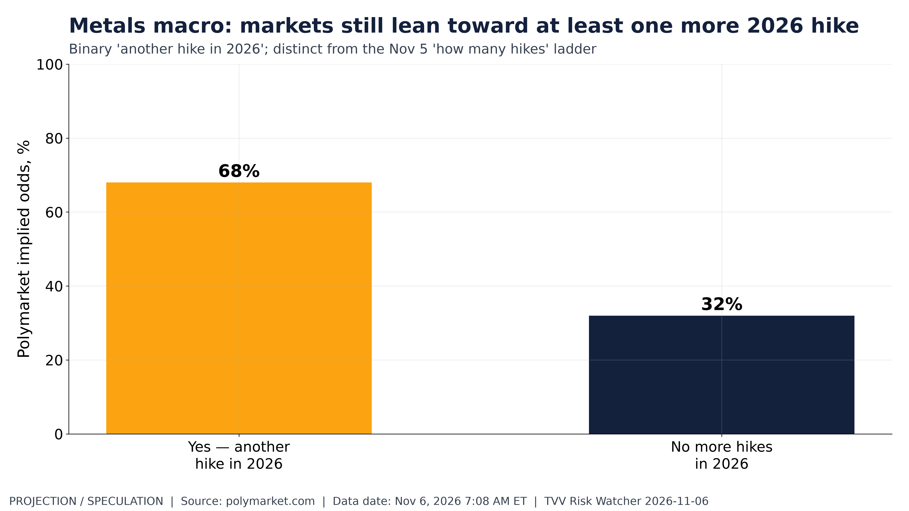
Metals macro: markets still lean toward at least one more 2026 hike. Polymarket: another Fed rate hike in 2026 — Yes 68%. Polymarket, Nov 6, 2026 7:08 AM ET. [Projection/Speculation; data as of Nov 6, 2026 7:08 AM ET] Source: polymarket.com data page
2. Major Terror / Security Incidents
- ★ SafePay ransomware: CISA, FBI, USSS and partners issued joint advisory AA26-293A warning that SafePay has hit more than 600 victims across critical-infrastructure sectors, using stolen credentials, VPN/edge flaws and phishing, then disabling backups before encryption. Patch KEVs, enforce MFA and keep offline backups. CISA advisory · CISA news
- ★ Cold-chain follow-up: FBI and CISA separately warn organizations about cyberattacks that raise supermarket and refrigeration temperatures (after the multi-country European food-spoilage incidents earlier this week). Motive still unclaimed. Context: CISA KEV's 2026 known-ransomware share of additions is about 10% YTD (27 of 284), below 2021–24 rates (see graph). BleepingComputer · CISA KEV
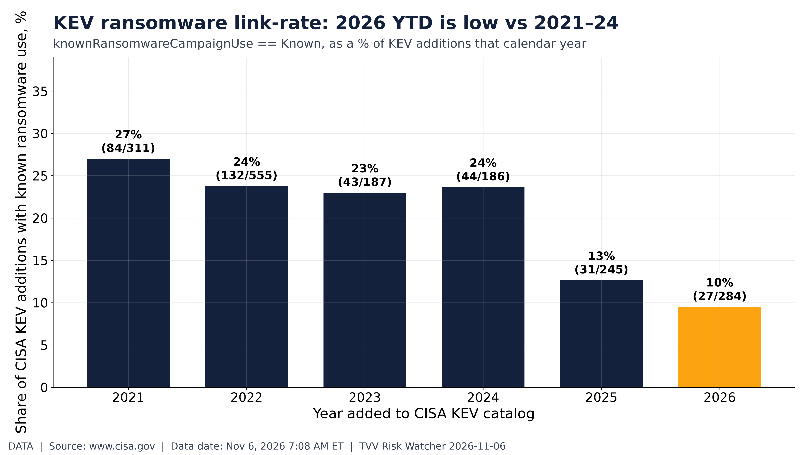
KEV ransomware link-rate: 2026 YTD is low vs 2021–24. CISA KEV: known-ransomware share of 2026 additions 10% (27/284) vs 2024 24%. CISA, Nov 6, 2026 7:08 AM ET. [Data; data as of Nov 6, 2026 7:08 AM ET] Source: cisa.gov data page
3. Earthquakes and Eruptions
- ★ No new M6.0+ earthquake with significant casualties or damage since Nov 1. Two offshore M6.1s carried USGS green alerts and no damage reports: Fiji region Nov 5 (17:21 UTC) and 144 km SE of Hasaki, Japan Nov 6 (10:39 UTC). Past ~30 days: USGS logged about 723 M4.5+ events (496 shallower than 35 km); a same-rate 14-day projection (not a USGS forecast) implies about 97 M5+ and 11 M6+ (see graphs). USGS map · USGS Hasaki M6.1
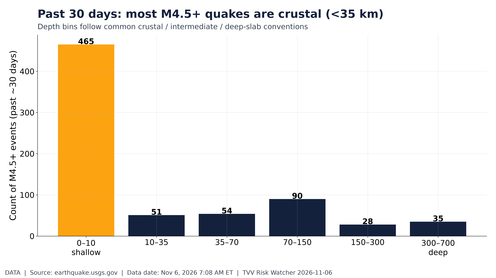
Past 30 days: most M4.5+ quakes are crustal (<35 km). USGS M4.5+ past ~30d: 723 events; 496 shallower than 35 km; 35 at ≥300 km. USGS, Nov 6, 2026 7:08 AM ET. [Data; data as of Nov 6, 2026 7:08 AM ET] Source: earthquake.usgs.gov data page
4. Solar / Space Weather
- ★ Space weather quiet into Nov 6: GOES Hp magnetometer ranged about 19–137 nT over the past week; real-time solar wind was near 345 km/s with a moderate IMF |B| path (see graphs). Latest GOES X-ray flares topped C1.1 this morning — well below M/X flare risk. Pole drift: no new reading; next pole-drift globe is due Sun Nov 8. Long-horizon geomagnetic excursion risk remains a standing watch (Michael's view, labeled as his: 2035 at the earliest). NOAA SWPC magnetometer · NOAA RTSW
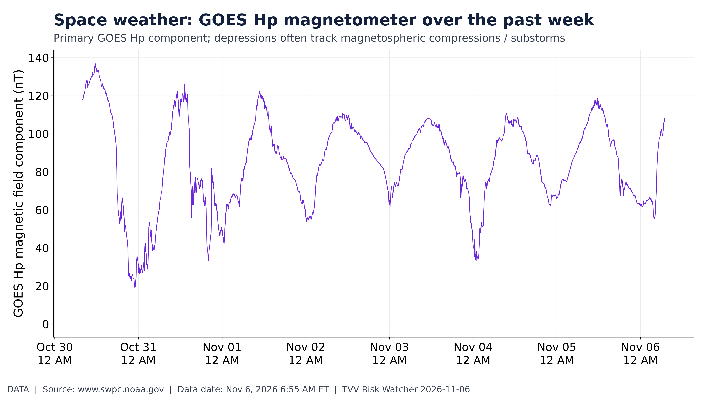
Space weather: GOES Hp magnetometer over the past week. GOES Hp 7-day range 19 to 137 nT; min at Oct 30 22:55 ET. NOAA SWPC, Nov 6, 2026 7:08 AM ET. [Data; data as of Nov 6, 2026 6:55 AM ET] Source: swpc.noaa.gov data page
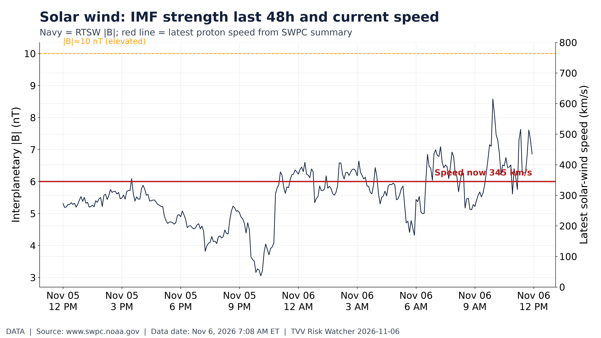
Solar wind: IMF strength last 48h and current speed. RTSW |B| 48h; latest solar-wind speed 345 km/s (SWPC summary). NOAA, Nov 6, 2026 7:08 AM ET. [Data; data as of Nov 6, 2026 7:08 AM ET] Source: swpc.noaa.gov data page
5. Critical Infrastructure / Transportation Disruptions
- ★ Ukraine power: Zelenskyy's claim that every plant has been damaged underscores the grid-attrition risk as winter approaches (see GEO). Markets have already repriced US data-center power, cooling and REIT names: from post-Aug-1 peaks through the Nov 5 close, Vertiv about −40%, Constellation about −20%, Equinix about −9.5% (see graph). The Guardian · Yahoo Finance Vertiv
- Data Center Infrastructure may be slowing from Boom Times:
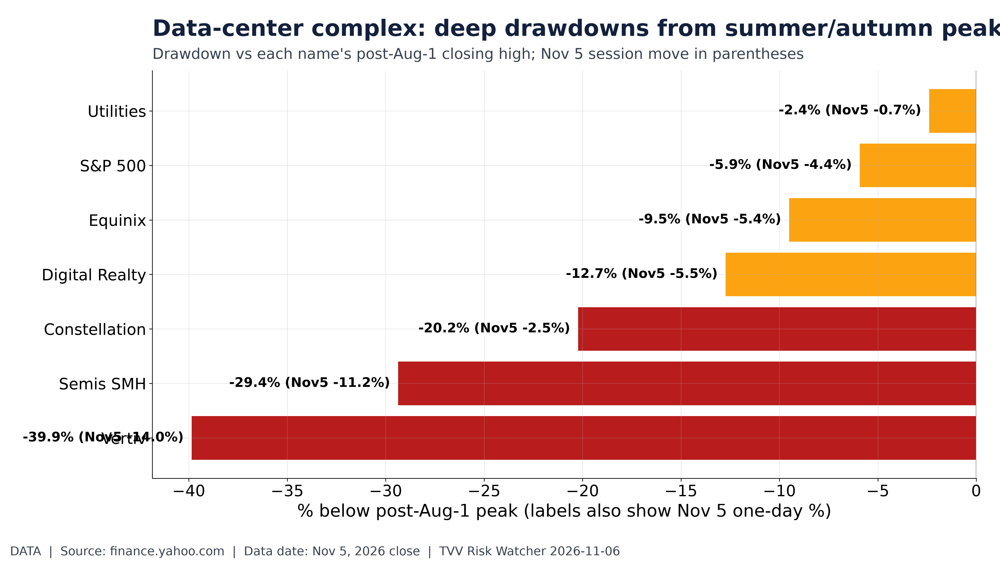
Data-center complex: deep drawdowns from summer/autumn peaks. From post-Aug-1 peaks: Vertiv -39.9%, Constellation -20.2%, Equinix -9.5%. Yahoo, Nov 5, 2026 close. [Data; data as of Nov 5, 2026 close] Source: finance.yahoo.com data page
6. Econo-Metrics
- ★ October Employment Situation prints today at 8:30 AM ET: consensus roughly +59k to +65k payrolls and unemployment near 4.2% (CNBC preview). Polymarket's pre-print jobs-added buckets are shown in today's graph — treat as market odds, not the BLS print. Credit: ICE BofA US high-yield OAS eased to 3.32% on Nov 4 from a recent 3.44% peak even as equities sold off (see graph). CNBC · Polymarket · FRED HY OAS
- ★ Implication from credit vs equity: high-yield spreads still contained after the Nov 5 Mag7 wipeout suggests lenders are not yet pricing a broad recession shock; watch the 8:30 print and any revisions to ADP's soft professional-services streak. FRED HY OAS · CNBC
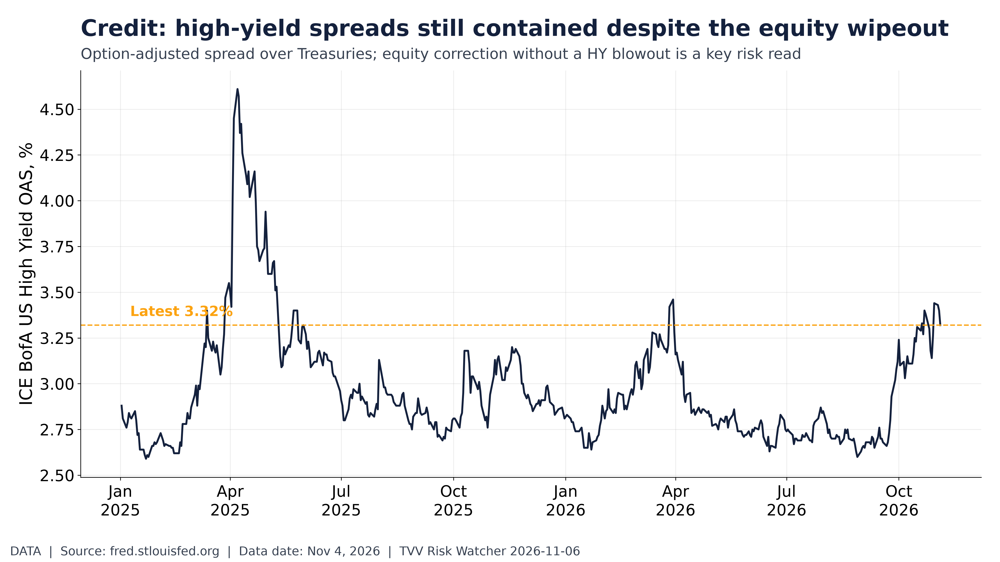
Credit: high-yield spreads still contained despite the equity wipeout. ICE BofA HY OAS 3.32% on Nov 4, 2026 (recent peak 3.44%). FRED BAMLH0A0HYM2. [Data; data as of Nov 4, 2026] Source: fred.stlouisfed.org data page
7:08 AM ET] Source: polymarket.com data page
7. Epidemic / Bio-Metrics
- ★ Ebola (DRC): SitRep 173 (Nov 3) counts 10,668 confirmed cases and 5,198 deaths across 67 health zones — up from SitRep 170's 10,467 / 5,103. Transmission remains active; earlier WHO vaccine-candidate additions still apply. Ebola Tracker SitRep 173
- ★ US respiratory season: CDC RESP-NET early-season hospitalization rates for COVID, RSV and flu are on today's graph (provisional; early weeks revise up). SV.2.4 / China-surge claims: still no WHO, Hong Kong CHP, Taiwan CDC or China CDC substantiation — kept out as a confirmed BIO item. CDC RESP-NET
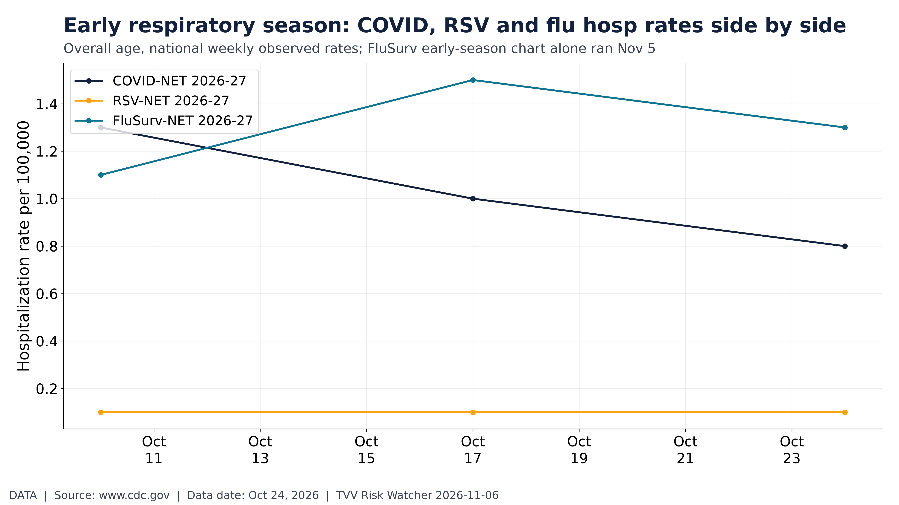
Early respiratory season: COVID, RSV and flu hosp rates side by side. CDC RESP-NET early 2026-27: COVID-NET 0.8, RSV-NET 0.1 per 100k (latest weeks). CDC, Oct 24, 2026. [Data; data as of Oct 24, 2026] Source: cdc.gov data page
8. Gold and Silver and Commodities
- ★ Gold and silver eased into Fri Nov 6 after the midweek bounce: spot gold about $4,040–$4,063 (−0.5% to −1.1% on the day in early quotes) and silver about $52. From August peaks, gold/silver/oil ETF drawdowns sit beside credit and Treasury moves on today's graph. Centrino Capital
- ★ Oil firming off the post-election plunge: Brent quotes near $98–$100 early Nov 6 after Wednesday–Thursday's multi-day drop from above $117 last week. Polymarket still prices "another Fed rate hike in 2026" as the dominant path (see graph); implication: rate-hike odds keep a floor under real yields and a lid on non-yielding metals if growth holds. Centrino Capital · Polymarket
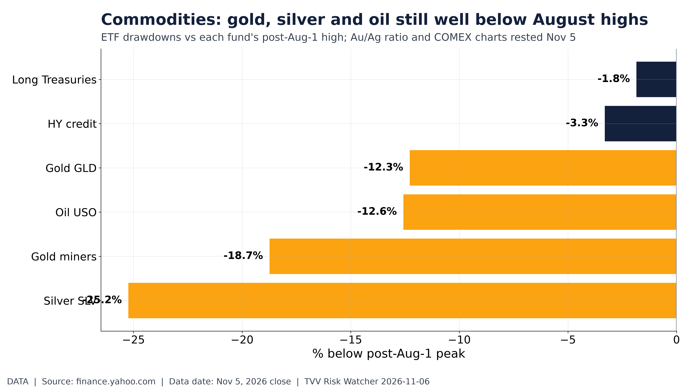
Commodities: gold, silver and oil still well below August highs. From post-Aug-1 peaks: GLD -12.3%, SLV -25.2%, USO -12.6%. Yahoo, Nov 5, 2026 close. [Data; data as of Nov 5, 2026 close] Source: finance.yahoo.com data page
9. Stock Averages and Nasdaq Major Movers
- ★ Nov 5 correction (Michael CARRY): Dow −1,833 points (−3.4%), S&P 500 −4.4%, Nasdaq Composite −5.5% into correction; Magnificent Seven lost about $1 trillion of market value, with Nvidia about −9%. From post-Aug-1 peaks through the Nov 5 close: SMH −29.4% (session −11.2%), QQQ −14.8%, SPY −5.9%, NVDA −24.1%, AVGO −31.8%, META −22.2%, PLTR −25.9% (see graph). VIX about 26.6 on the six-month path (see graph). CNBC · Yahoo Finance live · Investing.com/Reuters · Yahoo SMH · Yahoo VIX
- ★ Friday open context: overnight futures and Asia followed the AI/chip washout; watch whether the jobs print at 8:30 AM ET extends the risk-off move or sparks a bounce in beaten-up semis. CNBC · Yahoo Finance live
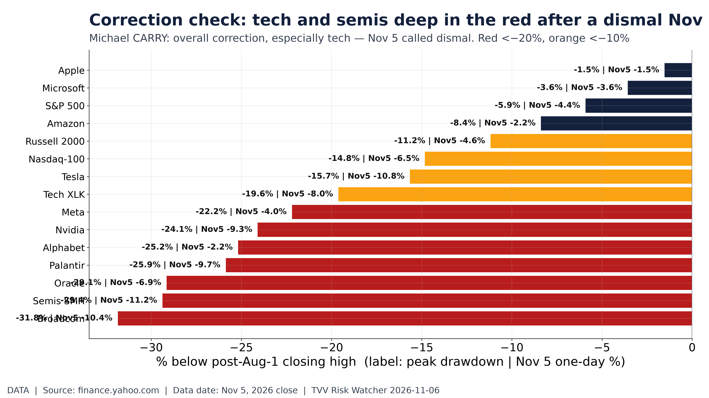
Correction check: tech and semis deep in the red after a dismal Nov 5. From peaks: SMH -29.4% (Nov5 -11.2%), QQQ -14.8% (-6.5%), SPY -5.9% (-4.4%). Yahoo close Nov 5, 2026 close. [Data; data as of Nov 5, 2026 close] Source: finance.yahoo.com data page
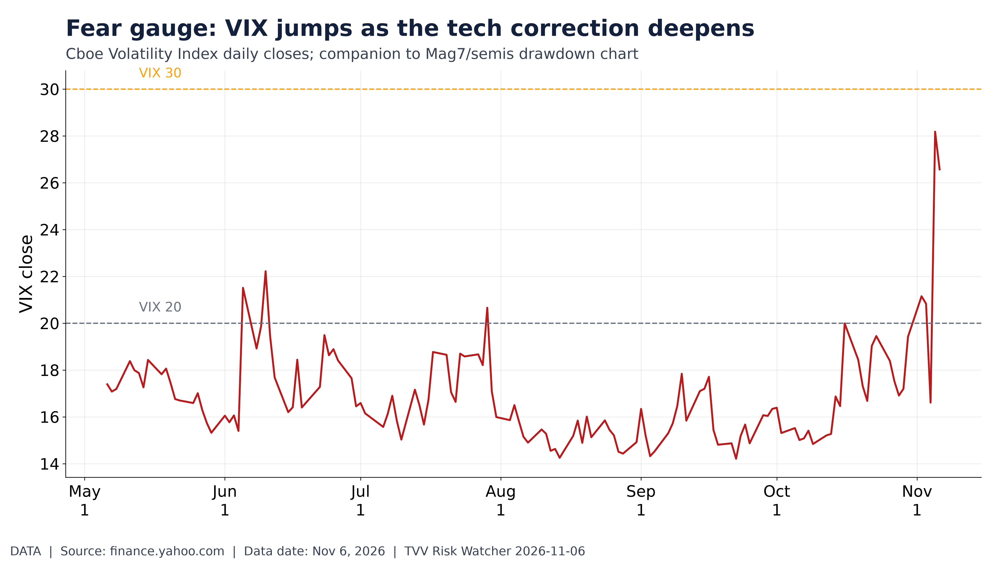
Fear gauge: VIX jumps as the tech correction deepens. VIX last 26.6 on Nov 6, 2026; 6-mo high 28.2. Yahoo ^VIX / Cboe. [Data; data as of Nov 6, 2026] Source: finance.yahoo.com data page
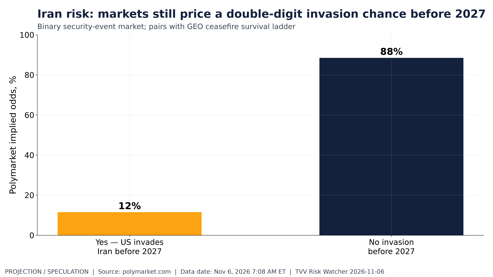
Iran risk: markets still price a double-digit invasion chance before 2027. Polymarket: US invades Iran before 2027 — Yes 12%. Polymarket, Nov 6, 2026 7:08 AM ET. [Projection/Speculation; data as of Nov 6, 2026 7:08 AM ET] Source
10. Polymarket and Kalshi Sentiment Highlights
- ★ Iran escalation ladder: Polymarket prices a US invasion of Iran before 2027 in the mid-teens (see graph), against ceasefire-survival odds that fade into year-end (see GEO graph). Implication for the near term: markets still treat a full invasion as a tail, not the base case, even as Hormuz stays restricted. Polymarket · Polymarket
- ★ Recession-by-end-2027 odds and the Alaska Senate: Polymarket's US-recession-by-2027 contract is on today's graph; Alaska's Senate race remains uncalled pending ranked-choice tabulation on Nov 18 (Peltola led Sullivan by about 600 first-choice votes after Election Night). Polymarket · Alaska Division of Elections
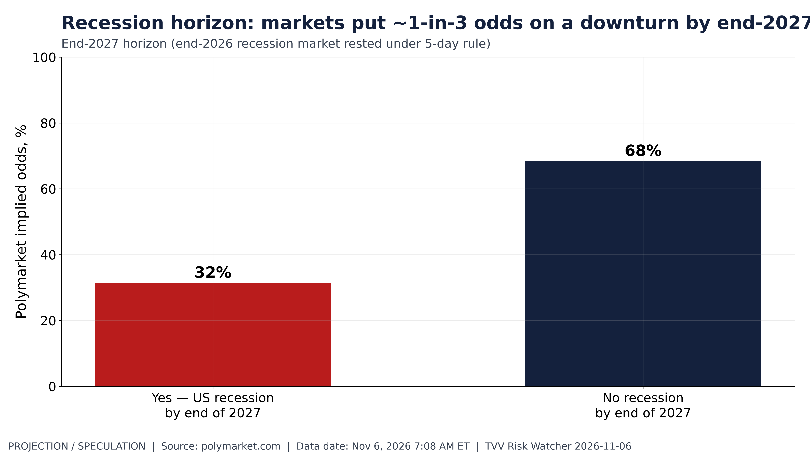
Recession horizon: markets put ~1-in-3 odds on a downturn by end-2027. Polymarket: US recession by end of 2027 — Yes 32%. Polymarket, Nov 6, 2026 7:08 AM ET. [Projection/Speculation; data as of Nov 6, 2026 7:08 AM ET] Source: polymarket.com data page
11. Tech-Metrics
- ★ Tech correction chart (Michael CARRY): Mag7 and QQQ indexed from their own post-Sep-15 peaks show NVDA about −24% and QQQ about −15% through the Nov 5 close (see graph). AMD vs Nvidia relative strength with a 10-session slope projection (labeled projection, not a forecast) is the second TECH graph — near-term implication: the relative path still favors AMD if the recent slope holds, but both names remain deep in drawdown. Yahoo NVDA · Yahoo QQQ · CNBC
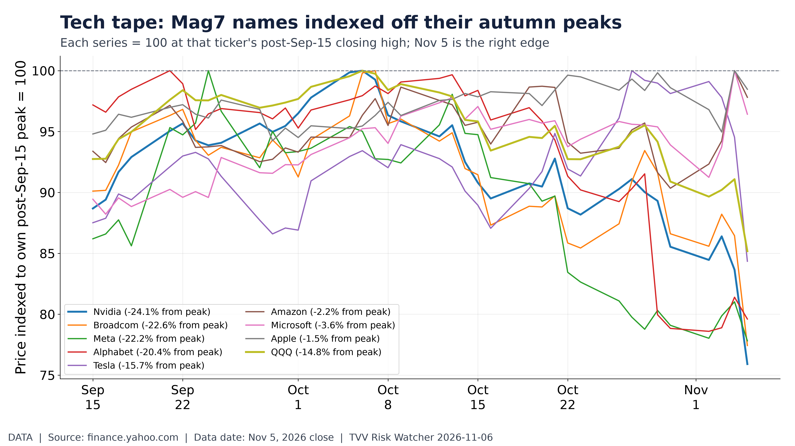
Tech tape: Mag7 names indexed off their autumn peaks. From own post-Sep-15 peaks: NVDA -24.1%, QQQ -14.8% through Nov 5, 2026 close. Yahoo. [Data; data as of Nov 5, 2026 close] Source: finance.yahoo.com data page
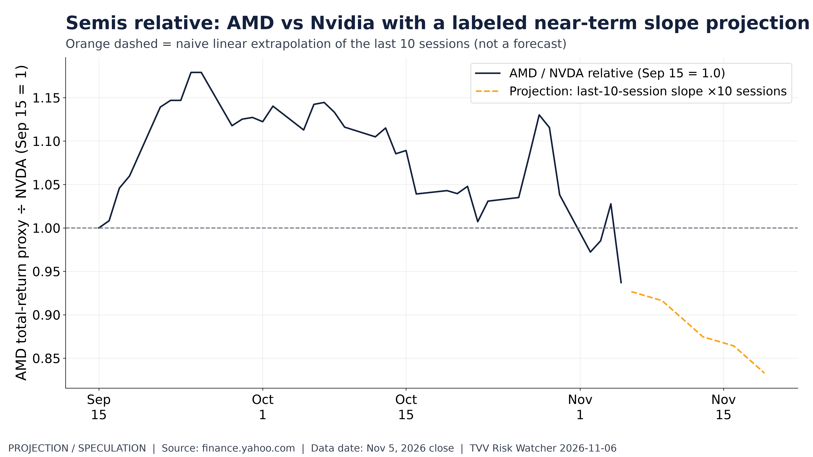
Semis relative: AMD vs Nvidia with a labeled near-term slope projection. AMD/NVDA relative from Sep 15; last 0.94. Dashed orange = last-10-session slope extended 10 sessions. Yahoo, Nov 5, 2026 close. [Projection/Speculation; data as of Nov 5, 2026 close] Source: finance.yahoo.com data page
12. AI Hypergrowth Risks
- ★ AI infrastructure and software names: from August peaks through Nov 5, the AI infra/software basket tracked on today's graph shows deep drawdowns alongside the broader chip complex — the same AI-capex concentration risk that hit Vertiv, neoclouds and Mag7 semis in one session. CNBC · Yahoo Vertiv
- ★ Labor channel: BLS JOLTS layoffs-and-discharges vs quits (2022–26) is on today's second AI graph — a slow-burn check on whether AI adoption shows up first as higher discharges rather than a quits boom. Implication: watch today's payrolls print and the next JOLTS for confirmation, not a one-day equity wipeout. FRED JOLTS
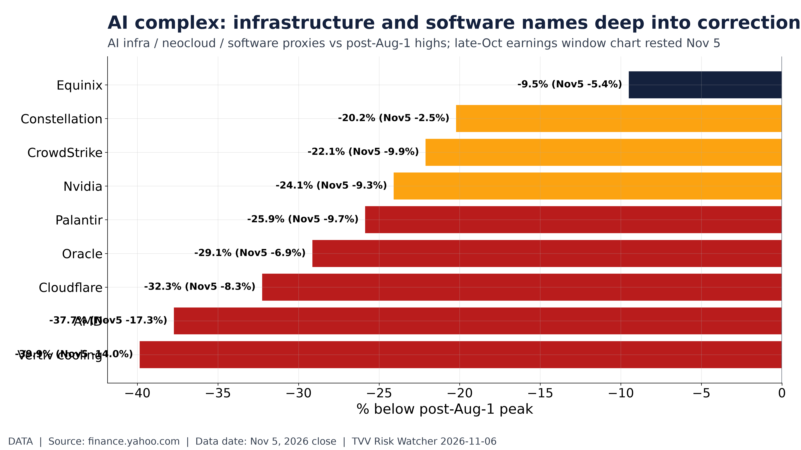
AI complex: infrastructure and software names deep into correction territory. From peaks: Vertiv -39.9%, Oracle -29.1%, Nvidia -24.1%. Yahoo, Nov 5, 2026 close. [Data; data as of Nov 5, 2026 close] Source: finance.yahoo.com data page
TECHVESTVENTURES ACTION-ALERT — November 6, 2026 see all graphs click TVV Risk Center
EDITOR — Michael Hentschel
Most news events require or spawn no action or reaction, some (but not many) are or become warnings. We draw attention to substantial lifestyle risks and market risks in particular, some created by Mid-Term Vote anxieties, Middle East tensions, vast over-indebtedness globally, and other events we track. Longer term but capable of causing sudden power surges as serious as the Carrington Event. Climate instability occasioned by long-term cyclical solar electro-magnetic flares, is becoming much more prominent and even more likely. New AI predictive analytics and pattern seekers are pointed in some of these directions, and we monitor imminent likelihood. Some readers might hedge and others might see opportunity. The above is not investment advice.